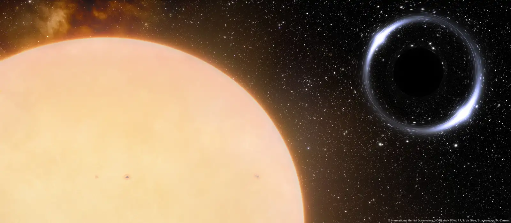
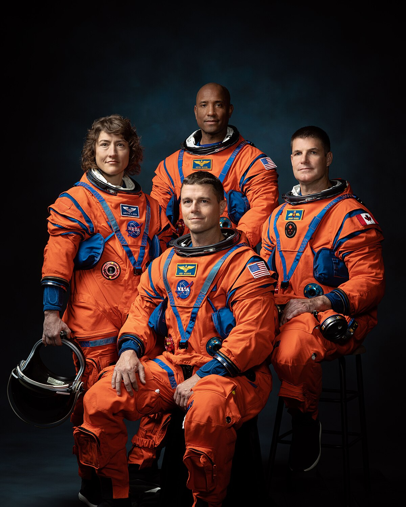
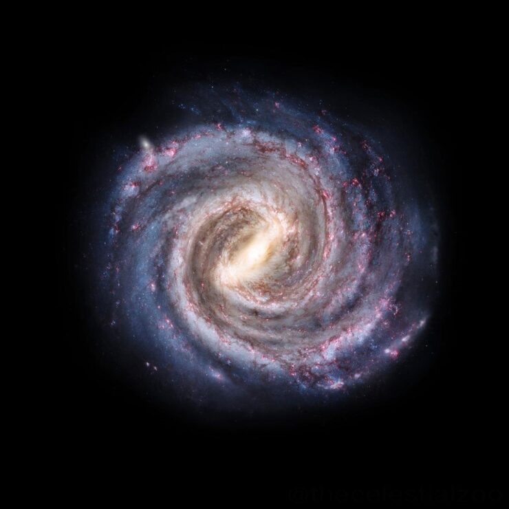
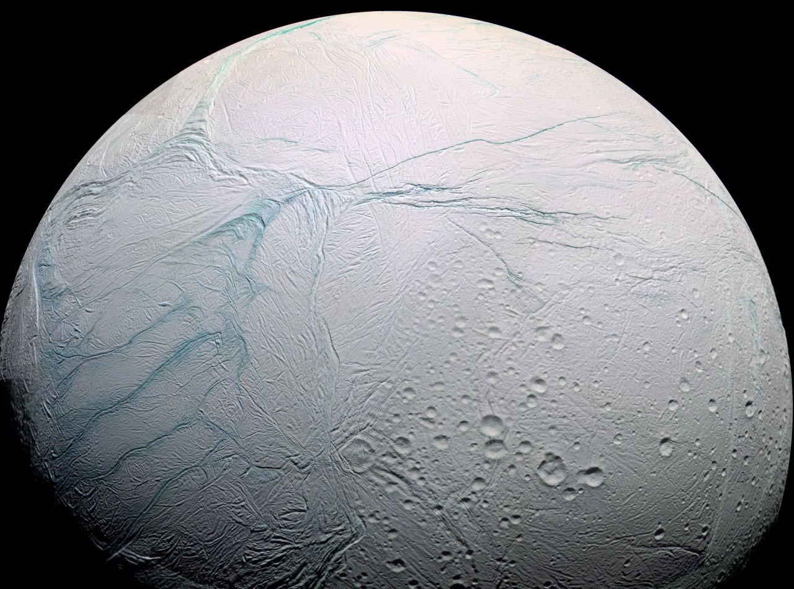

Exoplaneta con océanos de lava

Agujero negro más cercano a la Tierra

Nuevas imagenes del telescopio de James Webb

Misión Artemis II

Materia oscura en la Vía Láctea

Señales de vida en Encélado